Positive:Feed
Positive:Feed
A place for all of us who feel that the news is so messed up nowadays!
If you'd like to, you can

-
The Ugandan designer who upcycles British cast-offs – and returns them to sender
Making a statement in more ways than one, a new fashion collection is made from the global north’s cast-offs. Can it reboot Uganda’s textile industry? As fashion statements go, Ugandan-based designer...
-
Has the circular economy finally reached a positive tipping point?
This article has been created by Positive News and supported by Green Alley Award What is the circular economy, why should we embrace it, and is it finally going mainstream? Experts weigh in Positiv...
-
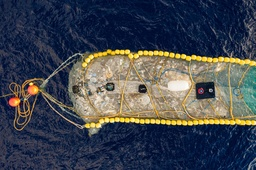
What went right: the garbage patch cleanup, plus more positive news
The great garbage patch cleanup hit a milestone It has become emblematic of our throwaway society, a grim testament to the pitfalls of single-use plastic. But this week, efforts to clean up the Great...
-
Taste of the future? Vertical farming is finally growing up in the UK
Vertical farms promise to boost food security, reduce emissions and do away with fertilisers – and they are springing up across the UK The only way is up for the UK’s nascent vertical farming industr...
-
Scientists accidentally discover ‘scallop discos’ as an eco-friendly fishing method
Help us continue to break the bad news bias Positive News is helping more people than ever to get a balanced view of the world – one that supports their wellbeing and empowers them to make a differen...
-
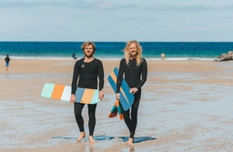
Surfers offer free wooden bellyboards to cut plastic pollution
At 140 beaches across Britain, traditional bellyboards are available to borrow for free thanks to a Cornish startup that is committed to tackling discarded polystyrene boards Locals call them ‘snappe...
-
Three good things: UK summer festivals that connect you with nature
Help us continue to break the bad news bias Positive News is helping more people than ever to get a balanced view of the world – one that supports their wellbeing and empowers them to make a differen...
-
What went right: closing the gender health gap, plus more positive news
The UK tackled the gender health gap Women in England live longer than men, but spend more of their lives in poor health, research has shown. This week the UK government launched a plan to address th...
-
The man filling the City with working-class stars - Positive News
A radical recruitment firm is transforming the intake of Britain’s most prestigious employers, using an algorithm that weeds out privileged but mediocre people and identifies talent from disadvantaged...
-
Site earmarked for Trump border wall will become a river park
The project aims to stimulate trade, enhance tourism and improve habitats along the Rio Grande. Those behind the design hope it will provide a blueprint for other border towns to follow Parklife has ...
-

Imperial Moth Spotted With Name ‘Anna’ Spelled Out on its Back Below a Face
Put this in your file called, Mother Nature Did WHAT? A 25-year-old woman was stunned to spot a face and the name ‘Anna’ appearing on a moth’s back. Reagan Lewallen did a double-take when she let he...
-
How 14-Year-old Philo Farnsworth’s Tinkering Brought the Moon Landing to Your Living Room
14-year-old Philo Farnsworth wasn’t looking up at the sky while plowing the field at his father’s farm in Rigby, Idaho. He was looking down at the straight furrows that coursed over the earth. That’s ...
-
Good News in History, July 31
236 years ago today, Poems, Chiefly in the Scottish Dialect by Robert Burns, the National Poet of Scotland, was published in Kilmarnock. It was a hit, and catapulted him to Scottish Stardom. Among the...
-
Sweet Dog Was Born With a Defect That Makes Her Look Permanently Surprised
Meet Belle, whose doctor diagnosed her with a birth defect that makes her look permanently surprised. The adorable mix of doberman and cattlehound was born with the muscles in her head stretched back...
-
Watch a Drone Save a 14-Year-old From Drowning in Powerful Spanish Current
A pioneering drone lifeguard service rolled out across Spanish beaches has saved the life of a 14-year-old boy as he struggled against a powerful current. General Drones supplies 30 surf rescue drone...
-
Delaware Will Install Free Solar Panels For Low-income Residents and Paying 70% For Moderate-incomes
A new two-year pilot program launched this month will spread the benefits of solar power to Delaware residents who otherwise would not be able to afford installing the green energy. The Solar Pilot P...
-

Your Inspired Weekly Horoscope From Rob Brezsny: A ‘Free Will Astrology’
Our partner Rob Brezsny provides his weekly wisdom to enlighten our thinking and motivate our mood. Rob’s Free Will Astrology, is a syndicated weekly column appearing in over a hundred publications. H...
-
Good News on This Day in History
1,260 years ago today, the city of Baghdad is founded following a decisive victory by the Abbasid Caliphate over the Umayyads. It took four years to build, and the Caliph Al-Mansur assembled engineers...
-
Religious Practices Have Preserved 125,000 Sacred Groves in India, Growing a Conservation Success
Belief in Hinduism and other folklore has an incredible capacity to protect biodiversity in India, where devotees possibly protect 125,000 sacred forest groves containing hundreds of species. Sacred ...
-
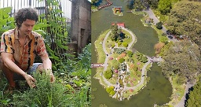
Good Gardening Week 4: What Are Your Zone, Climate Risks, and Weather Conditions? – Share Tips and Photos
Welcome back to Good Gardening! In our Week 3 discussion, we wanted to know what people’s go-to flowers or vegetables were—the kind they can’t get through a season without growing. We took it to socia...
-
Send In Your Favorite Tartan For Year-Long Scottish Exhibition Honoring the Iconic Fabric
Scotland’s premier design museum is calling all Scots to rummage through their house and find unusual objects made or decorated with that most iconic of Scottish contributions to the world—Tartan. Th...
-
Dead Solar Panels Are About to Become a Lot More Valuable – a $2.7 Billion Market by 2030
The demand for recycled solar photovoltaic (PV) panel components is set to skyrocket in the coming years as the number of installations surges and the threat of a supply bottleneck looms. A Rystad En...
-
Good News in History, July 29
Happy 69th birthday to one of the greatest American documentarians, Ken Burns. His gargantuan resume of deep dives into uniquely American topics have stirred the minds of viewers for a generation with...
-
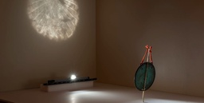
Rare Chinese 'Magic Mirror' That Projects Hidden Image of Buddha Rediscovered After Decades in Museum Storage -
Mirror, mirror on the wall—what is the rarest artwork of them all? Under special lighting conditions, a plain-looking bronze mirror from the 16th century held at the Cincinnati Art Museum, reflects a...
-
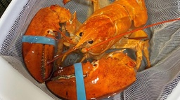
1 In 30 Million Orange Lobster Noticed in Delivery and Rescued By Restaurant Workers
An incredibly rare sea creature was saved from the jaws of death after restaurant workers were struck with its unusual color and called experts for a second opinion. A bright orange lobster arrived i...
-
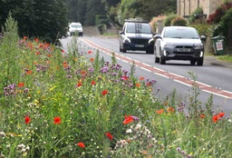
Village Tackles Speeding by Planting Thousands of Flowers Because Drivers Slow Down as They Pass By
Wildflower meadows are beautiful; so beautiful in fact that a village in Britain has found they act as natural speed traps from motorists slowing down to look at them. The village of Long Newnton in ...
-
Brits Are Saving $26 on Their Electric Bills By Making Simple Changes
British households have reduced their energy spend by an average of £22-a-month by making simple changes, such as leaving hair to dry naturally, switching devices off at the socket, and limiting use o...
-
Good News in History, July 28
83 years ago today, small iron and bronze fragments found during the Sutton Hoo ship burial were determined to be part of a kingly helmet. Buried around 625 and is widely associated with King Rædwald ...
-
Engineers Turn Water into Carbon-Neutral Jet Fuel Using Solar Radiation
A carbon-neutral synthesis of kerosene, or jet fuel, has been produced by scientists, made by combining sunlight with water. 5% of human emissions are generated through kerosene use in aviation, whic...
-
Best Friends Have Met in a Photo Booth Every 5 Years Since They Were Ten—Now It’s their 50th Anniversary
A pair of best friends who have taken a photo booth picture together every five years since they were ten just snapped their 50th anniversary photo. 60-year-olds Keith Laughton and Martin Dowle went ...
-
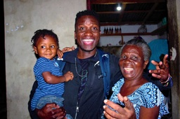
22-Year Old Man Found a Baby Abandoned in a Trash Can in Haiti and Decides to Become its Father
Taking a “leap of faith,” a young Haitian man is trying to adopt to a baby he found in a trash can despite it cutting into his university studies. Long since legally-declared the boy’s guardian, 27-y...
-
Duolingo Has Created a Course for “High Valyrian” the Dragon Language From Game of Thrones
Having already delighted Trekkie fans with their course on the Klingon language from Star Trek, the language learning app Duolingo has created a course on “High Valyrian” the magical dragon language f...
-

Good News in History, July 27
1 year ago today, the largest repatriation of artifacts, 17,000 in all, was sent from the U.S. State Department back to Baghdad. It was a collection of confiscated contraband, as looters continually d...
-

How to Save An Elephant With CPR? Jump Up and Down on its Chest to Revive Her (Watch)
A truly staggering effort saw a mother and baby elephant rescued from a deep concrete pit in Thailand, during which a veterinary team had to perform elephant CPR. In torrential monsoon rains, group...
-

She Lost Her Hair Battling a Brain Tumor. Her Son Grew His Hair out to Make Her a Wig
When an Arizona mom lost her hair during a third brain-cancer battle, a shaggy-maned son stepped up, shears in hand, to offer a solution. Growing golden luscious locks out past shoulder length, he ch...
-

The Strange Pink Glow Over Victoria, Australia Turned Out to Be Happy Cannabis Accident
Last week, a eerie pink glow lit up the sky above a small town in Australia, sparking mild concerns about an alien invasion, or at least that the locals had missed the memo of Season 5 of Stranger Thi...
-

100 Million-Year-Old Footprints of Giant Dinosaur Found at Restaurant in China
Among the great fossil beds of the world, China is up there, and nowhere else on earth can boast as many fossilized dinosaur footprints. However people might expect to find them in a remote desert, n...
-

Good News in History, July 26
94 years ago today, Stanley Kubrick was born. Widely considered one of the greatest filmmakers of all time, his films, almost all of which are adaptations of novels or short stories, cover a wide rang...
-

Livin’ Good Currency Ep. 19: Bill Glaser There’s an Entrepreneur Inside All of Us
The Lesson: What makes an entrepreneur? Humanity. We are all entrepreneurs. Our entire lives are a sequence of people trying to sell us ideas, opinions, values, as well as goods and services. People a...
-

D-Day Pilot Celebrated Turning 102 Attributing Longevity to ‘Art, Music, Good Food and the Finest Wine’
A D-Day pilot celebrated turning 102, and attributes his longevity partly to a love of fine wine, among other pleasures. Harry Gamper, who turned 102 on July 20th, missed his 100th birthday party due...
-

Gardening Can Lift Your Mood Even if You’ve Never Done it Before and Have No Mental Health Issues
There’s a deep satisfaction that arises from tending a garden, so deep that it can enliven even those who don’t need to be, and even those who don’t know how, a new study shows. A pilot, randomized-c...
-

TikTok Creators Have Been Banned From Sacred Sites In Nepal For Being ‘Nuisances’
Describing them perfectly as “nuisances,” Buddhist monks in Nepal are banning TikTok video creators from using their country’s religious heritage as a stage for the popular social media app. There’s ...
-

25-Year-Old Runs into Burning Home and Saves 5 Kids–Gets Rewarded With $500K and ‘New Lease on Life’
A man is being honored by a city as a hero after he charged into a house that had turned into a raging inferno to rescue a young girl. A late-night argument was his girlfriend had a disgruntled 25-ye...
-

Good News in History, July 25
25 years ago today, K.R. Narayanan was sworn in as President of India, fulfilling Gandhi’s dream by becoming the first leader from an “untouchable” caste. In his inaugural, after receiving 95 percent...
-

Dutch Are Reducing Waste By Fixing Broken Objects With Online Local Barter Network-And You Can Too
Finding someone who can fix a broken piece of furniture, mend clothing, or repair a family treasure has become easier thanks to a new online platform. The guilder is a repair exchange platform, enabl...
-

From Beer to Biogas: Creating Green Energy Using Brewer’s Grain Farm Waste
A Pennsylvania farm has partnered with a nearby microbrewery to create an alternative fuel produced with brewer’s waste and organic matter. The Dickinson College Farm in Pennsylvania joined with Moll...
-

Good News in History, July 24
111 years ago today, American academic and explorer Hiram Bingham III, after being guided by indigenous farmers, became the first Westerner to lay eyes on Machu Picchu. Set high on a peak in the Ande...
-

7 Healthy Habits Can Almost Halve Our Risk of Dying From Stroke and Protect Against Alzheimer’s
Seven healthy habits can almost halve people’s risk of suffering a life-threatening stroke, according to new research. They include being active, eating better, losing weight, quitting smoking and ma...
-

When Antibiotics Failed, She Found a Natural Enemy of Superbug Bacteria to Save Husband’s Life
Tom Patterson was dying in a U.S. hospital from a massive bacterial infection he’d contracted while traveling in Egypt. Doctors gave him a prognosis of days. Fortunately, his wife, Steffanie Strathde...
-
Your Inspired Weekly Horoscope From Rob Brezsny: A ‘Free Will Astrology’
Our partner Rob Brezsny provides his weekly wisdom to enlighten our thinking and motivate our mood. Rob’s Free Will Astrology, is a syndicated weekly column appearing in over a hundred publications. H...
-

Good News in History, July 23
On this day, 130 years ago, Emperor Haile Selassie was born. One of the seminal figures in Ethiopian history, he was a member of the Menelik dynasty that traced its ancestry to the union of King Solom...
-

Berlin’s Derelict Airport Undergoes Transformation to Become a Sustainable Neighborhood
With 580 acres of ex-airport real estate now available, the area is being dreamed of as a sustainable neighborhood of wide open green spaces, bike lanes, and affordable efficient housing. After old T...
-

Wild Bison Return to UK After Thousands of Years – And Are Ready to Tear S*!# Up
Wild European bison have been released in southeast England where they will roam unperturbed by humans on Great Britain for the first time in 6,000 years. It’s the culmination of several years of pla...
-

More Young Adults are Renting Next Door to Retired Folks – With Intergenerational Benefits
The latest housing trend in America has nothing to do with décor, or “open concepts,” but rather the rise of intergenerational roommates. Described as separated by at least one generation, intergener...
-

A ‘True Lassie’ Helped a Rescue Team Find His Owner Who Fell 70 Feet in Tahoe Forest
A Nevada man may owe his life to the intelligence of his border collie after the real-world “Lassie” led search and rescue to him. The man had fallen 70 feet down a steep slope in the Tahoe Forest, b...
-

Good Gardening Week 3: Which Are Your Go-To Plants or Flowers? — Share Tips and Photos
Welcome back to Good Gardening! In our Week 2 discussion thread, we wanted to find out what people were growing at this very moment. We took it to social media and shared photos… Brandi Lanai took th...
-

Good News in History, July 22
59 years ago today, Philadelphia’s first heavyweight boxing champion, Sonny Liston KO’d Floyd Patterson in a rematch of the bout that the year before won him the belt. The fight went much the same way...
-

Botswana Cuts HIV Transmission Rates to Children from 40% to 1% in ‘Groundbreaking Achievement’
The WHO recently-celebrated Botswana for their “groundbreaking achievement” of stopping the transmission of HIV between moms and their newborns. The national program has reduced such occurrences from...
-

Large Dose of Iron Could be Used to Kill Off Drug-Resistant Prostate Cancer, Scientists Believe
Large doses of iron could be used to kill off drug-resistant prostate cancer cells, scientists believe. This could be especially prevalent since while there are a variety of treatments, and these usu...
-

These Micro-robots Can Clean Teeth By Shapeshifting into Toothbrush or Floss Forms
In a few years, you may just be throwing away your dental care kit, replacing it with a totally science-fiction shapeshifting robot that acts as a toothbrush, rinse, and dental floss in one. The tech...
-
5 Ways to bring people together with food
In almost every corner of the world, coming together and sharing a meal is one of the most communal and binding traditions. As we have already reported, food is a wonderful way to bring people togethe...
-
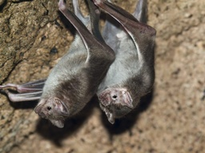
What vampire bats teach us about friendship
There are still biological and behavioral mysteries to social bonding that experts are trying to figure out. With so many factors at play it can be hard to put a fine point on why we do some things an...
-
Our greatest love of all could be friendship
We live in a world that gives top priority to finding a partner and being in a monogamous marriage. It’s the “happily ever after” to our fairy tales, for better or worse. However, this narrative overl...
-
How to keep friends with different political views
There’s a lot to be gained from friends with different opinions. That said, it can be difficult to maintain friendships with people who have strongly held opinions, politically speaking. This is why t...
-
4 tips that will help you be a better friend
Our loved ones are what makes life worth living. Little else matches the wonderful experiences we have with friends full of laughter and it turns out these times are also good for your health. Many st...
-
This African country is a guide towards protecting the oceans the right way
In 2010, the Convention on Biodiversity (CBD) has set a target that 10 percent of coastal and marine areas across the world should fall under protection by 2020. Two years after the deadline, that tar...
-
This is how Australia reduced plastic litter on its beaches by 30 percent
When it comes to reporting about plastic waste on beaches, the news is rarely good. But one report paints a more positive picture of the state of the issue in Australia. According to the study, plasti...
-
Panama enacts landmark legislation giving Nature rights
Panama is among the 25 most megadiverse countries in the world. It is home to big cats like jaguars and ocelots, 6 distinct monkey species like capuchins, myriad marine and bird life, and many kinds o...
-
5 ways to save rainforests and the world every day
“At first, I thought I was fighting to save rubber trees, then I thought I was fighting to save the Amazon rainforest. Now I realize I am fighting for humanity.” – Chico Mendes, Brazilian environment...
-
Returning Indigenous land could be our best conservation initiative yet
Eight years ago, the Australian government bought 19 farm properties throughout the Lower Murrumbidgee Valley in New South Wales with the intention of restoring the wetland region to its former glory....
-
U.S. Will Plant One Billion Trees to Combat Climate Change : UpliftingNews
Press J to jump to the feed. Press question mark to learn the rest of the keyboard shortcuts r/ UpliftingNews...
-
Luigi the dog defies the odds, returns home safe after 29 days : UpliftingNews
Press J to jump to the feed. Press question mark to learn the rest of the keyboard shortcuts Search within r/UpliftingNews r/UpliftingNews r/UpliftingNews...
-
'Special connection': Razz, the dog that couldn't walk two months ago, has new home : UpliftingNews
Press J to jump to the feed. Press question mark to learn the rest of the keyboard shortcuts Search within r/UpliftingNews r/UpliftingNews r/UpliftingNews...
-
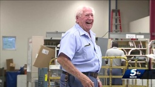
Nation’s senior letter carrier, in OKC his entire career, celebrates 70 years on the job : UpliftingNews
Press J to jump to the feed. Press question mark to learn the rest of the keyboard shortcuts Search within r/UpliftingNews r/UpliftingNews r/UpliftingNews...
-

Hawaii Gets Its Last Shipment of Coal, Ever : UpliftingNews
Press J to jump to the feed. Press question mark to learn the rest of the keyboard shortcuts Search within r/UpliftingNews r/UpliftingNews r/UpliftingNews...
-
ME ends 2022 fiscal year in the black, officials say : UpliftingNews
Press J to jump to the feed. Press question mark to learn the rest of the keyboard shortcuts Search within r/UpliftingNews r/UpliftingNews r/UpliftingNews...
-
Pennsylvania nurses receiving student debt cancellation : UpliftingNews
Press J to jump to the feed. Press question mark to learn the rest of the keyboard shortcuts Search within r/UpliftingNews r/UpliftingNews r/UpliftingNews...
-

Long a Climate Laggard, Ireland Lays Path to Cut Emissions in Half by 2030 : UpliftingNews
Press J to jump to the feed. Press question mark to learn the rest of the keyboard shortcuts Search within r/UpliftingNews r/UpliftingNews r/UpliftingNews...
-
Historic Senate Climate Deal Would Reduce Emissions 40% By 2030 : UpliftingNews
Press J to jump to the feed. Press question mark to learn the rest of the keyboard shortcuts Search within r/UpliftingNews r/UpliftingNews r/UpliftingNews...
-
Nepal doubles its tiger population, bringing them back from the brink of extinction : UpliftingNews
Press J to jump to the feed. Press question mark to learn the rest of the keyboard shortcuts Search within r/UpliftingNews r/UpliftingNews r/UpliftingNews...
-
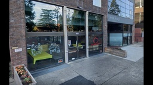
OR restaurant owner used $43k in tips to pay employees : UpliftingNews
I'm very happy to learn that recent regulation changes in the USA under the Fair Labor Standards Act say that tips legally belong to employees and not employers....
-
Fifth endangered Bengal tiger born in Cuban zoo : UpliftingNews
Press J to jump to the feed. Press question mark to learn the rest of the keyboard shortcuts Search within r/UpliftingNews r/UpliftingNews r/UpliftingNews...
-

‘The entire protein universe’: AI predicts shape of nearly every known protein : UpliftingNews
Press J to jump to the feed. Press question mark to learn the rest of the keyboard shortcuts Search within r/UpliftingNews r/UpliftingNews r/UpliftingNews...
-
Michigan Supreme Court: Law bans discrimination based on sexual orientation : UpliftingNews
Press J to jump to the feed. Press question mark to learn the rest of the keyboard shortcuts r/ UpliftingNews...
-

'Breaking Bad' statues shine light on actors, Albuquerque : UpliftingNews
Press J to jump to the feed. Press question mark to learn the rest of the keyboard shortcuts r/ UpliftingNews...
-
Judge: Wisconsin probe found 'absolutely no' election fraud : UpliftingNews
Press J to jump to the feed. Press question mark to learn the rest of the keyboard shortcuts r/ UpliftingNews...
-
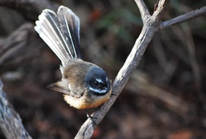
Native birds increase by 51% on Miramar Peninsula : UpliftingNews
Press J to jump to the feed. Press question mark to learn the rest of the keyboard shortcuts Search within r/UpliftingNews r/UpliftingNews r/UpliftingNews...
-
Early Alzheimer’s detection up to 17 years in advance : UpliftingNews
Press J to jump to the feed. Press question mark to learn the rest of the keyboard shortcuts Search within r/UpliftingNews r/UpliftingNews r/UpliftingNews...
-
A banana a day can keep some cancers away
Press J to jump to the feed. Press question mark to learn the rest of the keyboard shortcuts Search within r/UpliftingNews r/UpliftingNews r/UpliftingNews...
-
'We’re proud to be walking the talk' O'Rourke campaign says as staff forms union : UpliftingNews
Press J to jump to the feed. Press question mark to learn the rest of the keyboard shortcuts r/ UpliftingNews...
-
Long Newnton Parish Council using flowers to reduce speeding : UpliftingNews
Press J to jump to the feed. Press question mark to learn the rest of the keyboard shortcuts Search within r/UpliftingNews r/UpliftingNews r/UpliftingNews...
-
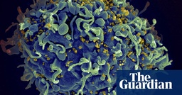
Oldest patient yet cured of HIV after receiving stem cell transplant : UpliftingNews
Press J to jump to the feed. Press question mark to learn the rest of the keyboard shortcuts r/ UpliftingNews...
-
The DEA Backs Down, Will Not Criminalize 5 Psychedelics
Press J to jump to the feed. Press question mark to learn the rest of the keyboard shortcuts r/ UpliftingNews...
-
A county fair 4-H bidding war kicks up champion hog price to $100,000 to benefit local family. : UpliftingNews
Press J to jump to the feed. Press question mark to learn the rest of the keyboard shortcuts Search within r/UpliftingNews r/UpliftingNews r/UpliftingNews...
-
Research on how kava can help people with PTSD begins : UpliftingNews
Press J to jump to the feed. Press question mark to learn the rest of the keyboard shortcuts r/ UpliftingNews...
-
Teen wins national competition for designing a gorgeous ball gown made of duct tape
A teen from Pasco County, Florida, just won a $10,000 cash scholarship after spending over 100 hours making a gown out of a seemingly impossible material—duct tape. Grace Vaughn won first place in th...
-

Oncology nurse fulfills dying patient’s wish to take in her young son when she died
A Pennsylvania oncology nurse stepped up in a big way when her terminally ill patient asked if she could adopt her only son when she died. Tricia Seaman was a nurse at Pinnacle Health Community Gener...
-

Five friends who went viral for taking the same photo since 1982 just took their latest picture
Five friends who have been taking the same photo every five years since 1982 are due for another photo, and they just shared it for the world to see. Last month, John “JD” Dickson, Dallas Burney, Mar...
-

How this man and his dog spent seven years walking in 38 countries
On May 21, 2022, a man and his dog officially ended the journey of a lifetime after spending seven years walking 48,000 kilometers around the world. Tom Turcich, from New Jersey, and his four-legged ...
-

Adopted 13-year-old girl becomes the youngest black student to gain admission into medical school in the U.S.
This 13-year-old girl from Texas just became the youngest black person ever to get accepted into medical school. In June, Alena Analeigh Wicker got into the University of Alabama‘s Heersink School of...
-

How to Take Action Every Day: 5 Powerful Habits
How to Take Action Every Day: 5 Powerful Habits “It had long since come to my attention that people of accomplishment rarely sat back and let things happen to them. They went out and happened to thin...
-

85 It’s The Little Things Quotes to Help You Enjoy the Small Moments and Things in Life
85 It’s The Little Things Quotes to Help You Enjoy the Small Moments and Things in Life It’s the little things that matter. A small thing like a hug or a kind text message can re-energize you and tu...
-

How to Overcome Perfectionism: 6 Powerful Habits
How to Overcome Perfectionism: 6 Powerful Habits “Certain flaws are necessary for the whole. It would seem strange if old friends lacked certain quirks.” Johann Wolfgang Von Goethe “People throw aw...
-

7 Small Ways to Make This The Happiest Summer of Your Life
7 Small Ways to Make This The Happiest Summer of Your Life “Then followed that beautiful season… Summer… Filled was the air with a dreamy and magical light; and the landscape lay as if new created in...
-

Don’t Compare Your Life to Someone’s Highlight Reel
Don’t Compare Your Life to Someone’s Highlight Reel “When you are content to be simply yourself and don’t compare or compete, everybody will respect you.” Lao Tzu Today I’d like to focus on a negat...
-

How to Get More Done with (a Lot) Less Stress: 12 Daily Habits
How to Get More Done with (a Lot) Less Stress: 12 Daily Habits “Three Rules of Work: Out of clutter find simplicity; From discord find harmony; In the middle of difficulty lies opportunity.” Albert ...
-

9 Things You Need to Stop Doing to Start Living a Happier and Self-Kinder Life
9 Things You Need to Stop Doing to Start Living a Happier and Self-Kinder Life “When one door of happiness closes, another opens, but often we look so long at the closed door that we do not see the o...
-
3 Signs of Commitment Issues Most People Ignore
ADVERTISEMENT People often talk about the red flags of a toxic relationship. But they often forget to mention that being with someone with commitment issues is harmful in and of itself. Or they don’t...
-
3 Causes of Emotional Injury and 3 Methods of Healing
ADVERTISEMENT Everyone knows you can get physical injuries from falling or physically hurting yourself. Some physical injuries aren’t a big deal, just minor bruises, and scratches that will heal in a...
-
Groundbreaking Implant Can REVERSE Parkinson’s Disease Symptoms
ADVERTISEMENT Surgeons at Southmead Hospital in Bristol, England, revealed a revolutionary treatment to reverse Parkinson’s disease. Called the Picostim™ DBS system, the deep brain stimulation device...
-
22 Positive Traits to Seek in a New Partner
ADVERTISEMENT You can’t choose who you love. There’s a force that’s chemical, biological, or on some other level that brings you together. Some people will attract you while others are not your cup o...
-
15 Ways Pets Increase Human Physical and Mental Health
ADVERTISEMENT You probably love the tail-wagging greeting your dog gives you when you arrive home. Sloppy licks and wiggles are normal ways dogs express how happy they are to see you. Cats are no dif...
-
15 Metabolism Boosters Most People Forget
ADVERTISEMENT Are you tired of battling excess weight and feeling drained all the time? Maybe you’re convinced that you inherited a slow metabolic system. Is there anything you can do to change your ...
-
14 Reasons Why Strong People Don’t Give Their Energy to Toxic People
ADVERTISEMENT Every person you spend time around gets some of your energy. When you give them your energy, you also receive things from them, good or bad. Toxic people can deplete you, and strong peo...
-
12 Signs Someone Is Oversharing in a New Relationship
A new relationship is probably one of the most exciting things in your life. You’re more than happy to share the news with everyone. But what if your partner shares too much, putting you in an awkward...
-
10 Exercises to Prevent Falls
Falls are one of the most significant causes of fatal injuries, especially in older adults. As you age, your balance alters, making you not as steady on your feet as you once were, but there’s hope. Y...
-
Study Warns That 75% of Teens Don’t Get Enough Daily Exercise
University of Georgia researchers found that 75% of teens don’t meet daily exercise requirements. The research revealed that female students participated in physical activity less often than males. Th...
-

Unthinking, Fast and Slow
Donald Officer, MA '89, is a strategic thinking practitioner who melds problem solving research models to help clients anticipate unexpected scenarios and opportunities while pursuing what is most mea...
-

Sit Write Share launches today
Aren Cohen, MBA, MAPP '07 is a learning specialist working with academically, motivationally and emotionally challenged students in the leading private schools in New York City. As shown in her websit...
-

MAPP Magazine: The Power of Community
The mission of the MAPP Magazine is first to keep University of Pennsylvania Master of Applied Positive Psychology Program (MAPP) alumni connected, and second to share the wide range of our applicatio...
-

The Art of Insubordination: A Review
Lisa Sansom, MAPP '10, is the owner of LVS Consulting, an independent consulting firm that helps to build positive organizations. Lisa provide services such as individual and leadership coaching, team...
-

On Doing What We KNOW is Good for Us
Yashi Srivastava, MAPP '16 is a coach, teacher, and writer passionate about helping people cultivate inner peace. While Yashi began her career teaching computer programming, her life-long fascination ...
-

MAPP Magazine Articles on Positive Psychology Applications
Check out the latest articles online in MAPP Magazine. The mission of the MAPP Magazine is first to keep Penn MAPP alumni connected and second to share the wide range of our applications of positive p...
-

August 31 is Launch Day for The Business of Race
Tomorrow a new book will be launched: The Business of Race: How to Create and Sustain an Antiracist Workplace and Why It’s Actually Good for Business by Gina Greenlee and Margaret Greenberg. At first ...
-

New MAPP Magazine on Positive Humanities
The latest issue of MAPP Magazine, published by graduates of the MAPP Program at the University of Pennsylvania, is dedicated to the Positive Humanities. The Positive Humanities is an emerging field. ...
-

Second Wave of Positive Psychology
Marta Velázquez Gil is a psychologist and researcher. She has published research in scientific journals and both national and international congresses. Her biggest interest is research on cultural ter...
-

“You’re on mute!” On Having High-Quality (Zoom) Connections
Dr. Nico Rose (MAPP '14) is a professor for organizational psychology at International School of Management (ISM) in Dortmund, Germany. He worked for Bertelsmann, Europe's largest media corporation fr...
-

5 Reasons to Stop Striving to Be Your Best Self
Do you often feel like you’re failing at motherhood? You’re not alone. A Care.com survey revealed that 80% of mothers in the United States feel stressed about getting everything done, 79% feel as if...
-

The Ultimate Guide to Storytelling in Content Marketing
I recently had the opportunity to speak again at Rocks Digital, a digital marketing conference in the Dallas Fort Worth area. I was invited to deliver a Rocks Talk, which is like a TEDx Talk, except ...
-

The J Team DVD Giveaway
It’s giveaway time again and this time, you can enter for a chance to win your very own copy of The J Team DVD. If you’re ready to show your sparkle, you can join JoJo Siwa and friends in The J Team!...
-

Swag Giveaway || The Bad Guys Movie
Hi loves! My daughters and I watched The Bad Guys movie and it was a lot of fun. So I’m hosting a giveaway to celebrate the release of THE BAD GUYS which is now available on Digital, 4K, Blu-ray and...
-

Encourage Your Child to Think Differently with EUREKA!
My daughters and I feel so blessed that we were invited to screen the new Disney Junior sensation: EUREKA! “Eureka!” is the story of a young talented girl inventor way ahead of her time who lives in ...
-

LIGHTYEAR Coloring Pages, Family Activities, and Dallas Ticket Giveaway
Well, hello loves! Disney and Pixar and their upcoming family film, LIGHTYEAR, which hits theaters June 17, invited me to partner with them to host a Fandango Code giveaway for 5 pairs of Fandango co...
-

Powerful St. Jude Prayer to Manifest Miracles
Before I share the St. Jude prayer you are looking for, I want to send you a hug. I can’t possibly know exactly how you feel, but I can definitely relate to feeling hopeless. I am grateful for God’s ...
-

Top Benefits of Learning a Foreign Language
One of the best decisions of my life was learning a second language. The benefits of learning an additional language have been tangible, not only for myself but for my children, too. I once heard som...
-

Tips to Create and Activate Your Personal Wellness Plan
Much of what I’m about to share I learned the hard way – and I’m still learning. I’ve done a lot of inner work to release the false belief that taking care of myself was selfish. If you’re here, I sus...
-

Interviews with The Garcias Cast: Everything for the Family
The girls and I screened all ten episodes of THE GARCIAS, a groundbreaking streaming series, that represents what it means to be a family. It’s a fun, happy, wholesome, and entertaining show for all ...